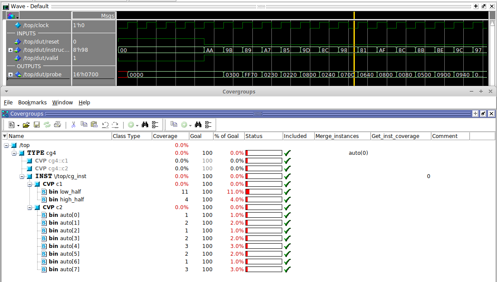
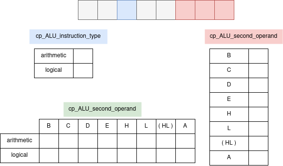
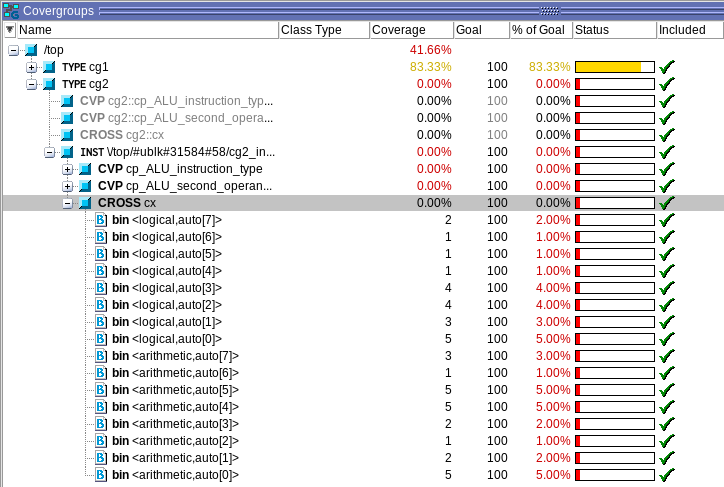
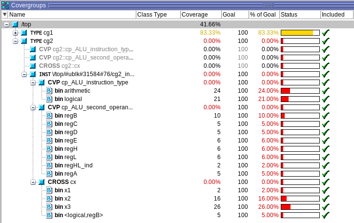

In the next example (cg2) the covergroup has two coverpoints: cp_ALU_instruction_type and cp_ALU_instruction_type. The former looks at the type of instruction while the latter focusses on the three least significant bits, which indicated the second operand. Also note that, other than putting 2 coverpoints on a single signal, putting coverpoints is also possible.
Additionally the number of times each bin needs to be hit to achieve a 100% goal is also increased to 100.
covergroup cg2 @(posedge clock);
option.at_least = 100;
cp_ALU_instruction_type: coverpoint gb_iface.instruction[5] iff(gb_iface.valid) {
bins arithmetic = {0};
bins logical = {1};
}
cp_ALU_second_operand: coverpoint gb_iface.instruction[2:0] iff(gb_iface.valid);
endgroup

The coverpoints can be seen as follows. A list is made with a certain number of cells (the bins). Every time when the evaluation condition is met, a mark is set in according field of the list. Although that already provides means to evaluate how much testing is done, correlating different coverpoints would provide with even further insights. This is called cross coverage and is also supported by SystemVerilog. Cross coverage can be done between coverpoints, signals, and combinations of both.

covergroup cg2 @(posedge clock);
option.at_least = 100;
cp_ALU_instruction_type: coverpoint gb_iface.instruction[5] iff(gb_iface.valid) {
bins arithmetic = {0};
bins logical = {1};
}
cp_ALU_second_operand: coverpoint gb_iface.instruction[2:0] iff(gb_iface.valid);
cx: cross cp_ALU_instruction_type, cp_ALU_second_operand;
endgroup

Cross coverage bins can be selected from the coverpoints it correlates. This can be achieved by using the keyword binsof. Bins can even be intersected with other ranges. Also logical operators can be used to build combinations like !, &&, and ||.
covergroup cg2 @(posedge clock);
option.at_least = 100;
cp_ALU_instruction_type: coverpoint gb_iface.instruction[5] iff(gb_iface.valid) {
bins arithmetic = {0};
bins logical = {1};
}
cp_ALU_second_operand: coverpoint gb_iface.instruction[2:0] iff(gb_iface.valid){
bins regB = {0};
bins regC = {1};
bins regD = {2};
bins regE = {3};
bins regH = {4};
bins regL = {5};
bins regHL_ind = {6};
bins regA = {7};
}
cx: cross cp_ALU_instruction_type, cp_ALU_second_operand {
bins x1 = binsof(cp_ALU_instruction_type.logical) && binsof(cp_ALU_second_operand.regA);
bins x2 = binsof(cp_ALU_instruction_type.logical) && !binsof(cp_ALU_second_operand.regB);
bins x3 = binsof(cp_ALU_instruction_type.arithmetic) || binsof(cp_ALU_second_operand.regA);
}
endgroup
Running the covergroup above can result as is shown below.

Let’s try to make out any sense of these results. The 2 coverpoints are as before, only with a more sensible naming of the bins. Intersections for the bins are made as follows:
With the results of the coverpoints cp_ALU_instruction_type and cp_ALU_second_operand, we can verify the correctness: